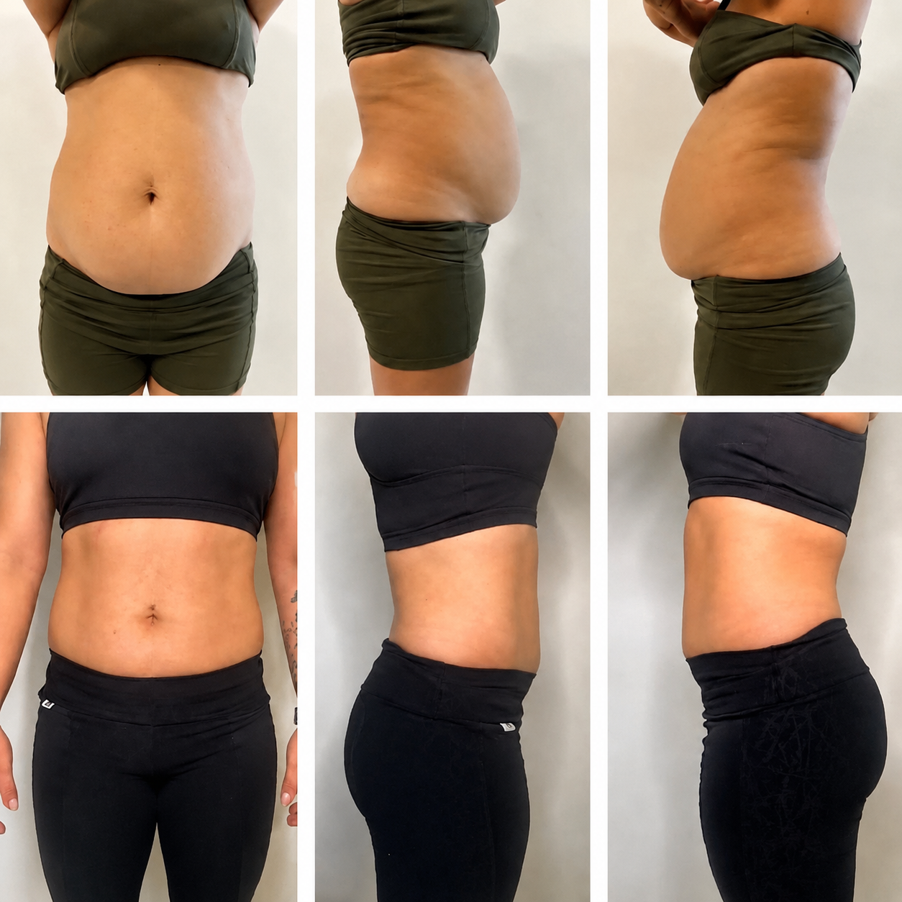
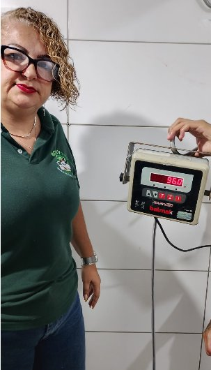
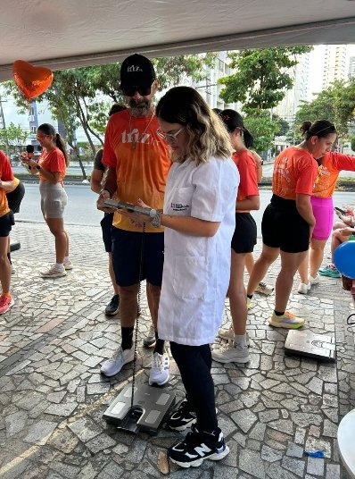

Farmácia Esportiva & Saúde da Mulher
Cuidado farmacêutico que devolve performance e bem-estar ao seu corpo
Orientação farmacêutica baseada em evidências para mulheres que querem entender seus sintomas, aliviar a dor e retomar o controle da própria rotina — dentro e fora do treino.
Sobre
Andrelly Mendonça
Farmacêutica graduada e pós-graduada em Farmácia Clínica e Prescrição Farmacêutica, Andrelly Mendonça atua há aproximadamente 2 anos na interseção entre farmácia esportiva e saúde da mulher, em Jaboatão dos Guararapes/PE.
Seu trabalho parte de um princípio simples: performance física e qualidade de vida caminham juntas. Por isso, une conhecimento técnico-científico a uma escuta próxima, ajudando mulheres a entenderem melhor seus sintomas, sua suplementação e suas escolhas de saúde no dia a dia.
- Farmácia Clínica e Prescrição Farmacêutica
- Farmácia Esportiva aplicada à rotina de treino
- Suporte farmacêutico em saúde da mulher
Formação técnica
Formações & Especializações
Base técnica sólida para orientar cada decisão de saúde com segurança.
Farmácia Clínica direcionada à Prescrição Farmacêutica
Especializações & Qualificações
Farmacologia Clínica, Terapêutica e Boas Práticas de Prescrição
Atenção Farmacêutica ao Paciente Diabético
Atenção Farmacêutica ao Paciente Hipertenso
Gestão de Obesidade
Farmacologia Clínica
Farmacoterapia e Atenção Farmacêutica
Suplementação Nutricional Fitoterápica
Alimentos Funcionais e suas Propriedades Bioativas
Aplicação de Injetáveis
Prova social
Resultados & Atuação em Campo
Da teoria à prática: acompanhamento real, em consultório e em campo.



Guia digital
Guia Prático para Mulheres com Endometriose
Alívio e bem-estar, com orientação farmacêutica clara e aplicável no dia a dia.
Um guia completo com estratégias de alimentação anti-inflamatória, orientações sobre suplementação direcionada, manejo de crises de dor e caminhos para agilizar o diagnóstico médico — tudo explicado em linguagem acessível.
- Acesso imediato após a compra
- Garantia incondicional de 7 dias
- Conteúdo 100% digital
Alimentação anti-inflamatória
Orientações práticas de alimentação para ajudar a reduzir a inflamação e o desconforto no dia a dia.
Suplementação direcionada
Entenda quais suplementos podem apoiar o seu tratamento, sempre com orientação farmacêutica.
Manejo das crises de dor
Estratégias para lidar com os momentos de dor aguda e recuperar o conforto mais rápido.
Caminho para o diagnóstico
Orientações para reconhecer sinais e agilizar a busca por um diagnóstico médico adequado.
Ferramentas práticas incluídas
Sugestões de refeições anti-inflamatórias prontas para o seu dia a dia.
Modelo para acompanhar dor, ciclo e sintomas ao longo do tempo.
Roteiro de perguntas e informações essenciais para levar ao médico.
Acompanhamento individualizado
Consultoria Farmacêutica Esportiva
Um acompanhamento pensado para a sua realidade: rotina de treino, objetivos, sintomas e uso de suplementos, tudo analisado com critério técnico e proximidade. A conversa começa direto com a Andrelly, pelo WhatsApp, para entender seu caso e explicar como funciona.
- Avaliação individualizada da sua rotina e histórico
- Orientação farmacêutica sobre suplementação
- Acompanhamento próximo e contínuo
Dúvidas frequentes
Perguntas Frequentes
O acesso é imediato: assim que o pagamento é confirmado na Hotmart, você recebe o material diretamente no seu e-mail e pode fazer o download a qualquer momento.
Não. O guia tem caráter educativo e de orientação farmacêutica, servindo como apoio complementar. Ele não substitui consultas, diagnósticos ou prescrições médicas.
Sim. Você tem 7 dias de garantia incondicional a partir da compra para solicitar o reembolso, sem burocracia.
O primeiro contato é feito pelo WhatsApp. A Andrelly entende seu momento, sua rotina e seus objetivos para explicar como o acompanhamento pode ser estruturado para o seu caso.
Sim, o pagamento pode ser feito à vista por R$ 29,99 ou parcelado em até 9x de R$ 3,94 no cartão de crédito, direto no checkout da Hotmart.
Dê o próximo passo
Cuidar de você começa com uma decisão simples
Escolha o caminho que faz mais sentido para o seu momento agora: o guia prático para começar hoje, ou uma conversa individual com a Andrelly.